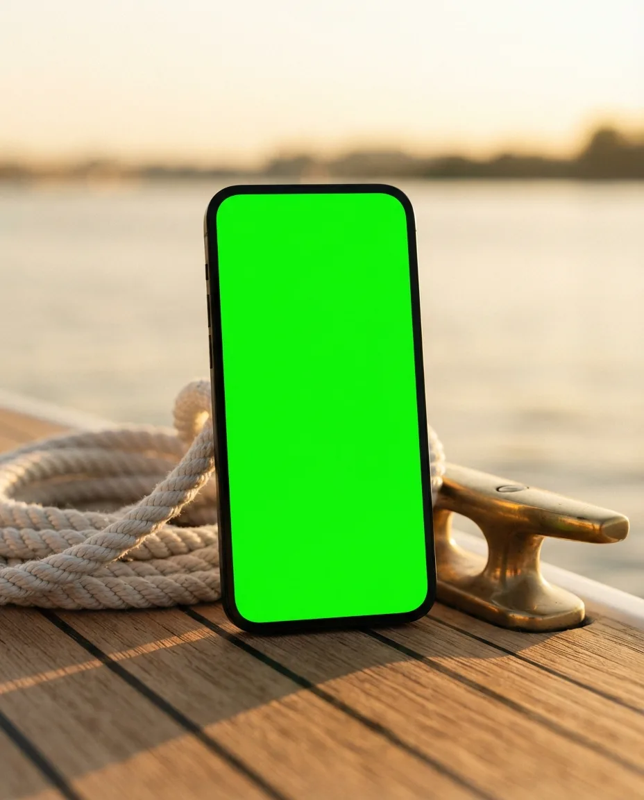
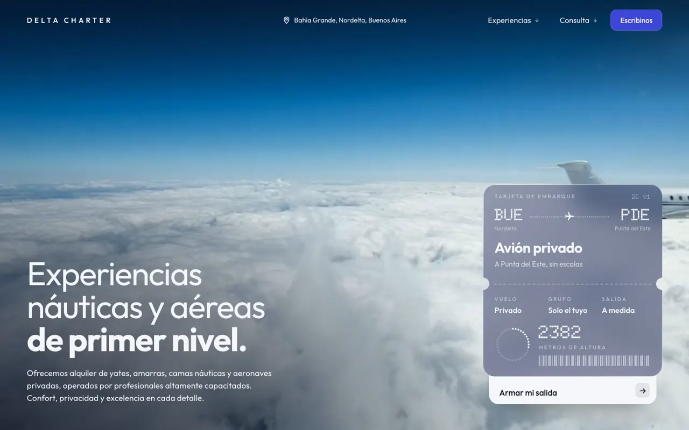
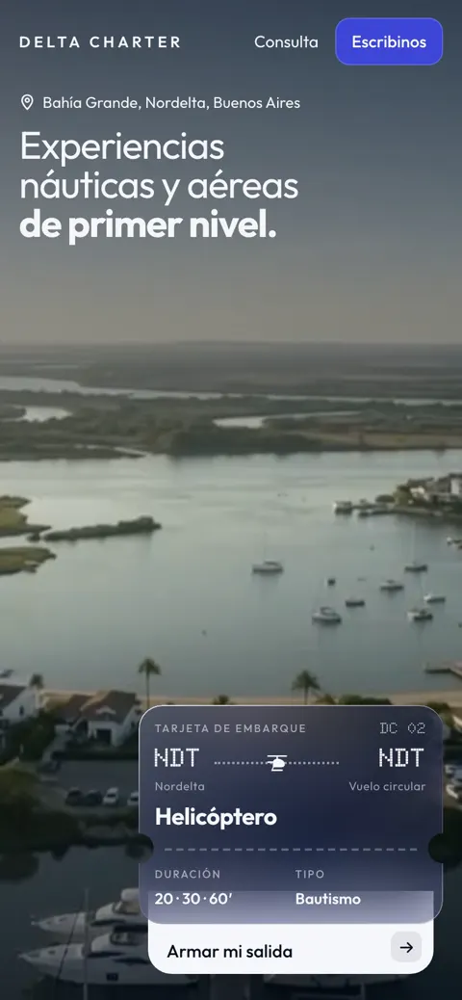
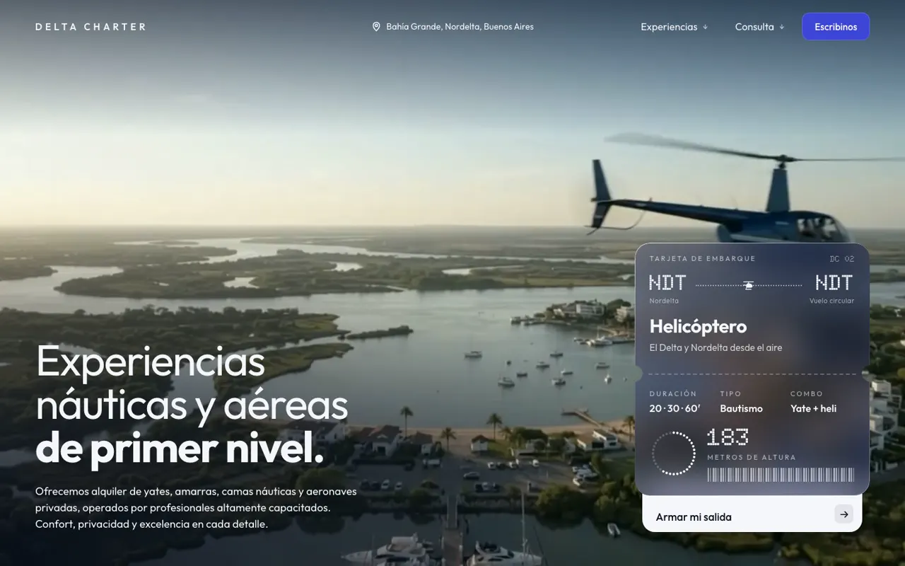
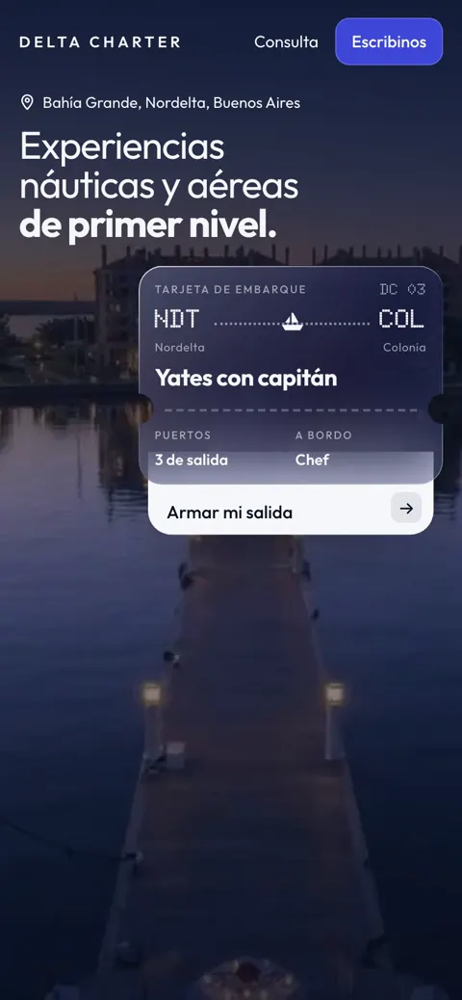
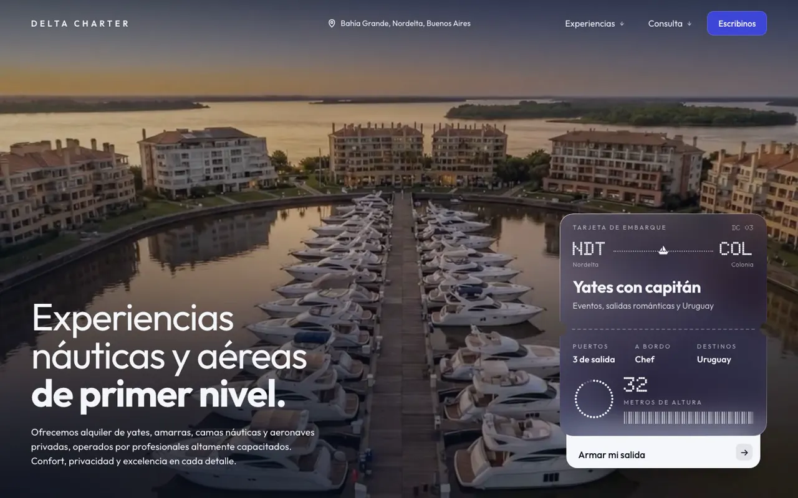

- Concepto · no encargado
- Turismo náutico
- 2026
Delta Charter.
Yates, helicóptero y avión privado con una sola empresa. La portada baja del cielo al agua mientras hacés scroll.
Ver el sitio
Lo que vi
Una empresa de yates, helicópteros y avión privado con 5,0 en Google y 81 reseñas, y un sitio de 2022 con una foto de la bahía y dos botones. Ninguna página decía qué barcos hay, cuántas personas entran ni que también vuelan.
La idea
«Por aire y por agua, desde Nordelta.»
Ninguna náutica de la zona tiene avión y helicóptero. La portada lo cuenta sin texto: al bajar, el video va del avión sobre las nubes al helicóptero sobre el Delta y a la mesa puesta en el yate, y un pase de embarque de vidrio cambia con cada tramo. La consulta sale por WhatsApp ya escrita.
Por dentro





Cómo usé IA
| Herramienta | Para qué | Lo que corregí a mano |
|---|---|---|
| Gemini (video) | Tres tomas encadenadas: avión sobre nubes, helicóptero sobre el Delta, bahía en hora azul. | El último cuadro de cada toma es el primero de la siguiente. Corté los saltos y rehice los finales donde el ala se deformaba. |
| Python + ffmpeg | Une las tomas (851 cuadros) y oscurece a azul noche en la costura, sin gastar otra generación. | Queda un defecto conocido: una cola fantasma de 4 cuadros en el giro del helicóptero. |
| Claude Code | El scroll que avanza y retrocede el video, y la consulta que sale con las cuatro respuestas que pide su WhatsApp. | La primera paleta salió genérica y la tiré. Se diseñó recién con referencias. |
En números
- Tomas encadenadas
- 3
- Cuadros del recorrido
- 851
- Segundos de video
- 35,5
- MB del video para scroll
- 8,2
Hecha en un día, del primer análisis a la muestra publicada.